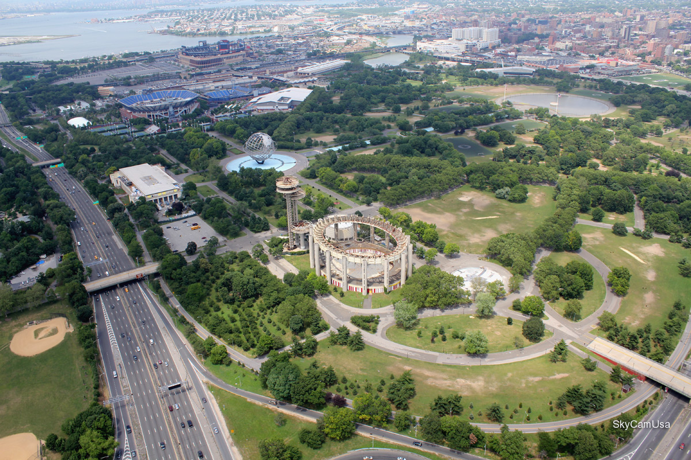
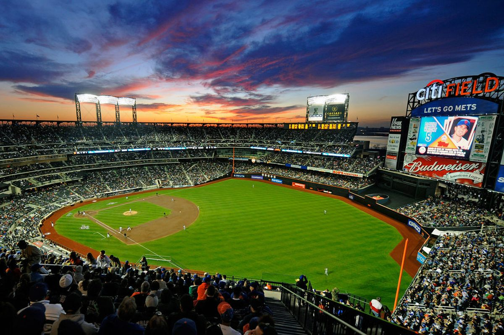
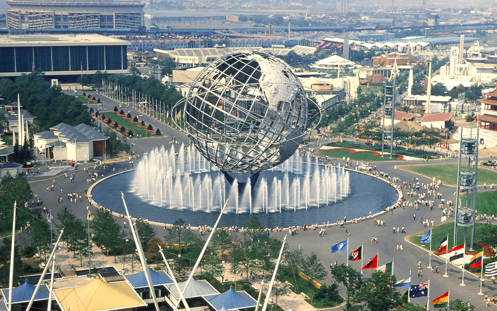
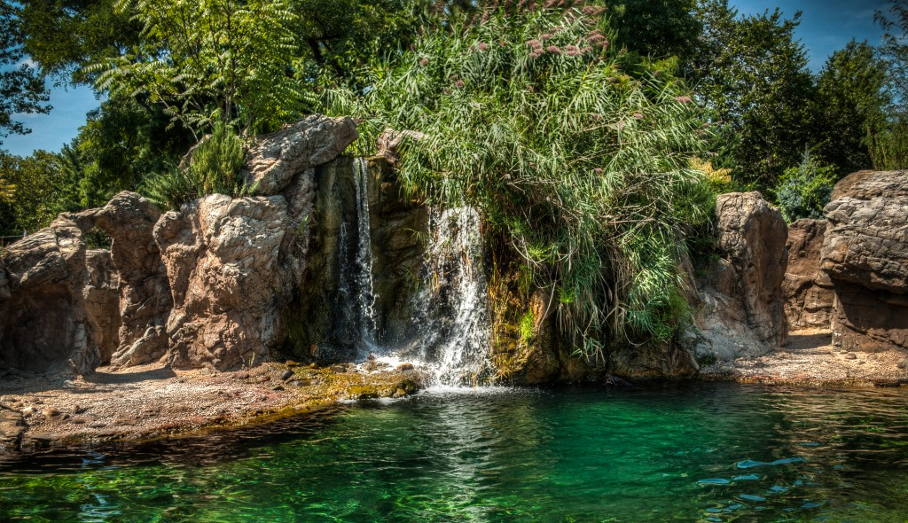

.jpg)
Queens este al cincilea cartier (Boroughs) ca mărime în orașul New York City, SUA. El se află amplasat în vestul insulei Long Island. Districtul sau cartierul a luat naștere în noiembrie 1683, aparțind sub formă de comitat de coroana britanică, în anul 1898 este integrat în orașul New York. Queens are o suprafață de 461,7 km² din care 178,8 km² este apă, și o populație de 2.229.379 loc. cu o densitate de 7.880,4 loc./km². Numele lui a fost dat în cinstea reginei "Queen Catherine of Braganza" (1638–1705), soția regelui Carol al II-lea al Angliei (1630–1685).
Queens a fost stabilit initial in 1683 ca una din cele 12 judete originale ale New York-ului. A fost numit dupa printesa portugheza Catherine of Braganza. A devenit un district al New York-ului in 1898, iar din 1683 pana in 1899, judetul Queens a includ si judetul Nassau.
Queens are una din cele mai diversificate economii din cele 5 districte ale orasului New York. Acolo regasim aeroporturile JFK si LaGuardia. Acestea sunt printre cele mai folosite din lume, astfel spatiul aerian care traverseaza Queens este foarte incarcat. Atractiile din Queens includ Flushing Meadows, Citi Field, US Open, Kaufman Astoria Studios, Silvercup Studios. Totodata, Queens este divers in ceea ce priveste casele si arhitectura lor, variind de la apartamente inalte in zonele urbane pana la cartiere suburbane cu case mici, in zonele de est.
Aruncati o privire asupra obiectivelor principale din Queens
Queens, 1901
Turneul United States Open (U.S. Open) este ultimul dintre cele 4 turnee de Mare Șlem (turneele de prim rang din circuitele de tenis masculin, ATP și feminin, WTA). O particularitate a acestuia este faptul că în setul decisiv se joacă tiebreak față de celelalte 3 turnee de mare șlem unde setul decisiv se joacă până cand se ajunge la diferență de 2 game-uri (bineînțeles după câștigarea a minim 6 game-uri în acel set). Suprafața de joc este cimentul.
Turneul se desfășoară în lunile august și septembrie, pe parcursul a două săptămâni fiind găzduit de complexul Flushing Meadows-Corona Park de la New York. Principalele arene ale complexului sunt Arthur Ashe Stadium, cu o capacitate de 24 de mii de locuri și Louis Armstrong Stadium cu 10 mii de locuri.
US Open este organizat anual, incepand cu ultima zi de luni din August, si dureaza doua saptamani, pana in Septembrie. Turneul consta in 5 campionate : single-urile pentru femei si barbati, partidele la dublu pentru femei si barbati, dar si partidele mixte. Exista si turnee pentru seniori, juniori, chiar si pentru cei in scaun cu rotile.
Arena centrala de la Flushing Meadows
Corona, parcul de la Flushing Meadows, este un parc public din orasul New York. Localizat in districtul Queens, este marginit de autostrada 678 si
Statuia este un simbol de bun venit pentru toată lumea: americanii care se întorc în țară, vizitatori și imigranți. Sculptorul care a făurit statuia este Frederic Auguste Bartholdi. Gustave Eiffel (cel care a realizat Turnul Eiffel) a creat armătura Statuii Libertății. Statuia din cupru, reprezentând Zeița Libertății, a reprezentat un cadou pentru Statele Unite din partea Franței, ca simbol al prieteniei dintre cele două națiuni. Piedestalul statuii a fost construit de Statele Unite. Oficial, statuia a fost dată Statelor Unite ale Americii la 4 iulie 1884, transportată de fregata Isere și montată definitiv în locul unde se găsește și astăzi. În 17 iunie 1885, Statuia Libertății ajunge în portul orașului New York.
La urma urmei, Statuia Libertatii este o alta atractie pentru turisti.
Empire State Building este un zgârie-nori și se află la intersecția dintre Fifth Avenuee și West Street 34. Clădirea a fost cea mai înaltă clădire din lume pentru mai mult de 40 de ani, între anii 1931 și 1972. A fost terminată în 1931 și a rezistat pe primul loc în top până ce a fost construit World Trade Center. În urma atacurilor teroriste cu bombe și distrugerea World Trade Center în 2001, Empire State Building a devenit din nou cea mai înaltă clădire din New York City. Empire State Building a fost numită de către Societatea Americană a Inginerilor civili ca una dintre cele șapte minuni ale lumii moderne.
Empire State Building este în prezent al doilea cel mai înalt zgârie-nori din New York(după One World Trade Center) și este pe locul 15 în topul internațional. Empire State Building a fost proiectat de William Frederick Lamb de la firma de arhitecturǎ Shreve. Lamb și Harmon au produs desenele clădirii în doar două săptămâni, cu ajutorul desenelor și modelelor sale de mai devreme pentru construcția Reynolds în Winston-Salem, Carolina de Nord și Carew Tower în Cincinnati, Ohio ca bază. În fiecare an, personalul de la Empire State Building trimite de Father's Day o felicitare personalului de la Building Reynolds în Winston-Salem pentru a aduce un omagiu rolului său ca predecesorul al Empire State Building.
Empire State Building se ridică 381m, la etajul 102 și incluzând vârful de 62m înǎlțimea ajunge la 443.09m. Acesta are o punte de observație în aer liber și în interior la etajul 86. Restul de 16 etaje reprezintă turnul, care este acoperit de un observator la etajul 102. Vârful turnului este 62m. O mare parte din el este acoperit de antenele de difuzare, cu un paratrăsnet în partea de sus. Empire State Building a fost prima clădire care avea mai mult de 100 de etaje. Acesta are 6500 de ferestre și 73 de lifturi și are o suprafață totală de 257.211 m2. Construcția are inclusiv propriul său cod poștal. Începând din 2007, aproximativ 21.000 de angajați lucrează în clădire în fiecare zi, făcând Empire State Building al doilea cel mai mare complex de birouri unice în America, după Pentagon.
O imagine artistica cu turnul din Manhattan.

Central Park este un parc urban din Manhattan, New York City. Central Park este cel mai vizitat parc urban din Statele Unite, cu 40 de milioane de vizitatori in 2013. De asemenea, este una din cele mai filmate locatii din lume. Parcul a fost stabilit initial in 1857 pe 315 ha. In 1858, Frederick Law Olmsted si Calvert Vaux, doi arhitecti, au castigat o competitie pentru a putea imbunatati si mari parcul prin intermediul unui plan intitulat "Greensward Plan". Constructia a inceput in acelasi an iar prima zona a parcului a fost deschisa publicului in iarna lui 1858. Constructia a durat in timpul Razboiului Civil American, si a fost extinsa la 341 de hectare.
Central Park a fost desemnat de o locatie nationala istorica de catre departamentul american de interior in 1962. Parcul, manageriat pentru secole de Departamentul Parcurilor si al Recreatiei din New York, este, in acest moment, controlat de organizatia non-profit Central Park Conservancy , care are contract cu guvernul munincipal prin intermediul unui parteneriat public-privat.
Printre principalele atractii turistice includem: Arsenal, Ballplayers House, Belvedere Castle, Bethesda Terrace and Fountain, Blockhouse, Burnett Memorial Fountain, Carousel